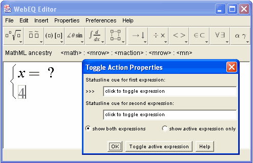

Action templates. Action templates give you a way to add interactivity to equations such as displaying highlights when the mouse is over an expression, links, and toggling between two expressions in response to a click.
Toggles are actually pairs of templates. When displayed in the WebEQ Viewer Control, only one of the two toggle expressions shows at a time. By clicking on the toggle expression, a reader switches between the two. This is useful for expanding ellipses, revealing answers, and so on. Optionally, you can set a status line message that will appear when a reader moves the mouse over a toggle expression in the Viewer Control. For example, you might set the cue to "click to expand" for the ellipsis, and "click to shrink" for the expression with which the ellipsis alternates.

When you insert a toggle template, an Action Properties dialog opens, and two subexpression templates are inserted at the cursor location. They appear vertically stacked and bracketed in the editing pane. Using the buttons on the Toggle Action Properties dialog, you can switch between simultaneous viewing of the two expressions, or viewing one expression as a time to preview how it actually will look in the Viewer Control. You can also simulate the effect of a mouse click on the toggle expression from the Action Properties dialog.
You can enter the optional status line cue expressions in the Toggle Action Properties dialog as well. The cue for the active expression is previewed in the status line at the bottom of WebEQ Editor.
You can specify a message string that will appear in the browser status line the reader mouses over the enclosed expression. You can simulate this by clicking the "Simulate Mouseover" button in the Highlight Action Properties dialog.
You can set a foreground highlight color, background highlight color. The highlighting is activated in the published equation when the reader mouses over the enclosed expression. You can simulate this by clicking the "Simulate Mouseover" button in the Highlight Action Properties dialog.
When displayed in the WebEQ Viewer Control, a link action template acts much like an ordinary HTML link. Clicking on the template directs the browser hosting the Viewer Control to go to a new URL. Optionally, you can specify a status line prompt, and highlight colors that appear when a reader moves the mouse over the link template.
When you insert a Link Action, an Action Properties dialog opens. By editing the values in the Link Action Properties dialog, you can set the URL and a prompt string for the browser status line that displays when the link expression is moused over. You can also enter foreground and background highlight colors that will activate on mouseover. (See Size and Color Formats for valid color names.) You can simulate the effect of a mouseover in a published equation by clicking the "Simulate Mouseover" button in the Mouseover Action Properties dialog.
There are two types of composite actions, mouseovers and nested actions.
A mouseover action template is just like a link action template, except clicking doesn't take the reader to a new page. It is useful for situations where you only want to display a status line prompt, or do some highlighting when the reader moves the mouse over and expression.
When you insert a mouseover action template, an Action Properties dialog opens. You can set a foreground highlight color, background highlight color, and a prompt string for the browser status line. (See Size and Color Formats for valid color names.) The highlighting and status line prompt are activated in the published equation when the reader mouses over the enclosed expression. You can simulate this by clicking the "Simulate Mouseover" button in the Mouseover Action Properties dialog.
The nested action type uses three separate action templates, managed through a single dialog in WebEQ Editor. When you select the outermost action, you can edit the properties of all three. Nested actions, because they are made up of basic types, have better interoperability with other MathML-aware software.